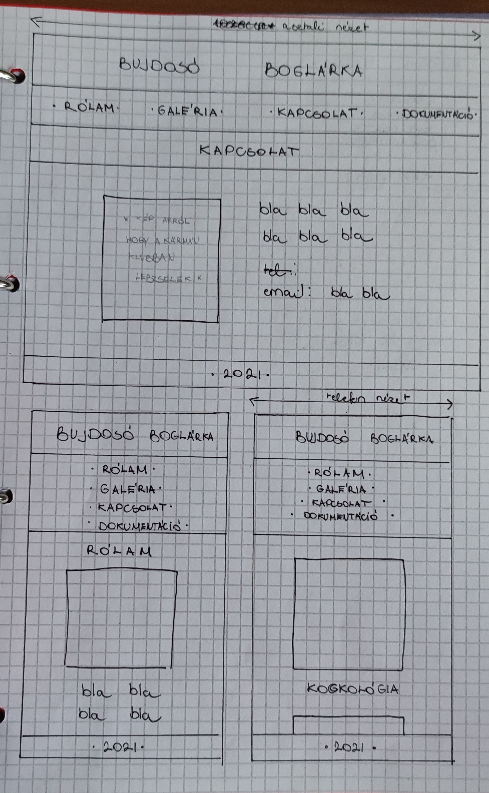

Hogyan készült?
Először egy honlap előtervet készítettem, ennek segítségével kezdtem el magát a feladatot is. Sokat segített, hogy már volt egy elképzelésem arról, hogy mit is szeretnék megjeleníteni. Az előtervtől néhány helyen eltértem, mert megtetszett egy másik kinézet. Kisebb problémák esetében pedig a W3SCHOOLS-t böngésztem.
